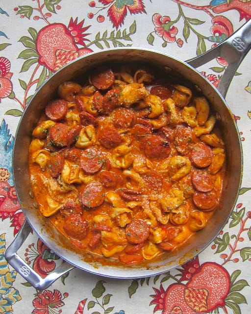

Sausage Tortellini

Description
This is one of my most favorite recipes to make during the week because it is just so simple. It feeds for a few days and only takes about 20 minutes start to finish.
Ingredients
- 1 lb smoked sausage, sliced into 1/4-inch slices
- 1 Tbsp olive oil
- 3 cloves garlic minced
- 1 (8-oz) can tomato sauce
- 1 Tbsp tomato paste
- 1 Tbsp Italian seasoning
- 1 cup chicken broth
- 1/2 cup heavy cream
- 1 (9-oz) package refrigerated cheese tortellini
- 1/4 cup parmesan cheese
Steps
- In a 12-inch skillet, brown sausage in olive oil.
- Add garlic and cook for 30 seconds. Stir in remaining ingredients.
- Bring to a boil then cover and simmer on low for 12-15 minutes.
- Serve with additional parmesan cheese, if desired.